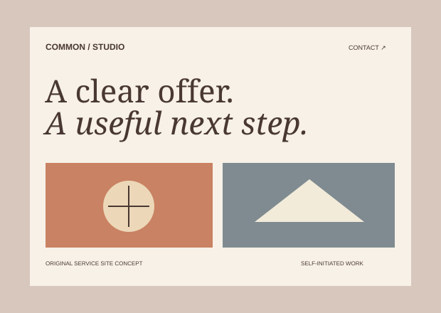
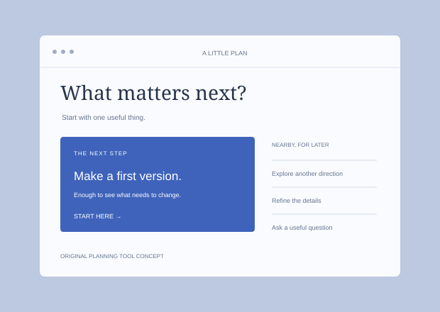

Workshop guide illustration unavailable. The complete project description and design thinking remain below.
Community · Self-initiated concept
A reason to get together
A workshop guide that helps people find something they want to make, without sorting through a wall of information.
Design thinking +
The question How can a first-time visitor choose a useful workshop without already knowing the community?
The choice Put the activity and date first. Use a direct “Find a workshop” action, simple categories, and enough context to help people decide.

Studio illustration unavailable. The complete project description and design thinking remain below.
Services · Self-initiated concept
Make the offer easy to find
A small studio website with a clear offer, a readable process, and one useful next step.
Design thinking +
The question What does a potential client need before starting a conversation?
The choice Explain the service before showing the work. Let the examples demonstrate the approach, and keep contact within reach.

Planning tool illustration unavailable. The complete project description and design thinking remain below.
Interface · Self-initiated concept
One useful next step
A planning interface that gives the next action more attention than the backlog.
Design thinking +
The question How can a plan help someone start rather than simply list everything?
The choice Give one task a distinct place, keep later work nearby, and make completing or changing the next step straightforward.
How I can help
Start with the part that needs attention. We can define the right scope together.
01
Product direction
Find the central problem, organize the experience, and turn an ambitious idea into a scope you can act on.
Clarity · Structure · Priorities
02
Websites
Explain your offer with considered content, distinctive design, and a visitor journey that leads somewhere useful.
Content · Design · Implementation
03
Interface design
Make everyday tasks easier to understand, with careful attention to the states and details people actually use.
Flows · Components · Interaction
Understand, make, refine
A short shared brief. A working version. A careful finish.
01 / Understand
Find the real question
We begin with the people, the purpose, and what needs to change. The outcome is a short, shared brief.
02 / Make
Make it tangible
Explore a concrete direction and a working version. Seeing the idea makes the next choices easier.
03 / Refine
Refine the details
Check the content, interactions, and small screens. Keep what works and improve what gets in the way.
Curious about the details
My approach is curious, practical, and close to the details. I care about how an idea reads, how an interface responds, and how the whole thing feels when someone uses it.
I work best through a clear conversation, honest feedback, and something tangible we can improve together.